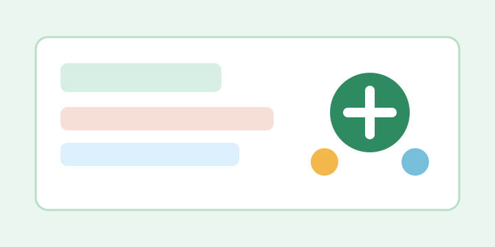
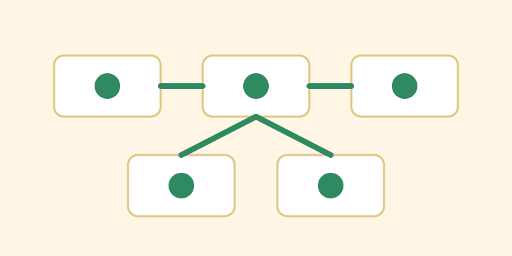
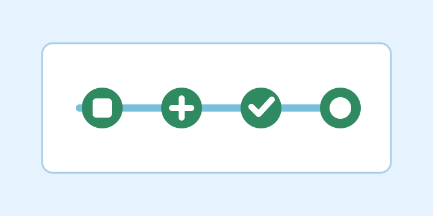
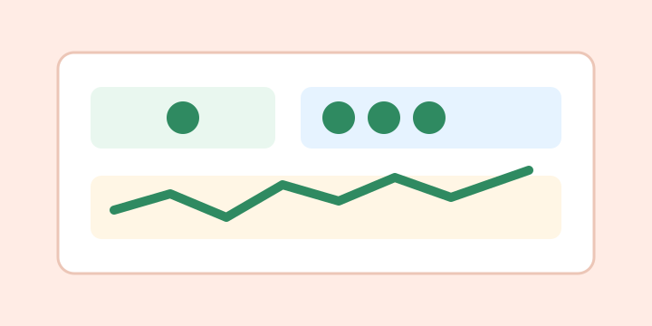

LLM Customer Support Platform
Integrated AI-assisted responses for account, service, transaction, status, and policy-related queries, reducing repetitive support inquiries by 30%.
Full Stack Software Engineer
Software engineer with 4+ years of experience designing and delivering customer-facing products, REST APIs, microservices, distributed systems, AI-assisted workflows, and modern full-stack applications.
About
I build end-to-end software systems with a focus on performance, reliability, and maintainable architecture. My experience spans Java and Spring Boot microservices, React applications, cloud integrations, event-driven pipelines, database optimization, observability dashboards, and AI-powered customer support capabilities.
I enjoy translating business requirements into systems that scale cleanly, reduce operational friction, and give teams confidence to ship faster.
Projects

Integrated AI-assisted responses for account, service, transaction, status, and policy-related queries, reducing repetitive support inquiries by 30%.

Decomposed monolithic components into independent Spring Boot services, improving scalability by 35% and lowering change impact across service boundaries.

Built GitLab pipelines to provision and clean up Kubernetes resources on demand, improving cluster utilization and reducing manual setup effort.

Configured Prometheus metrics scraping and Grafana dashboards for API, JVM, and infrastructure monitoring, improving incident response efficiency by 22%.
Skills
Education
University of Cincinnati
Cincinnati, Ohio | December 2025
Social Media Accounts
Connect with me